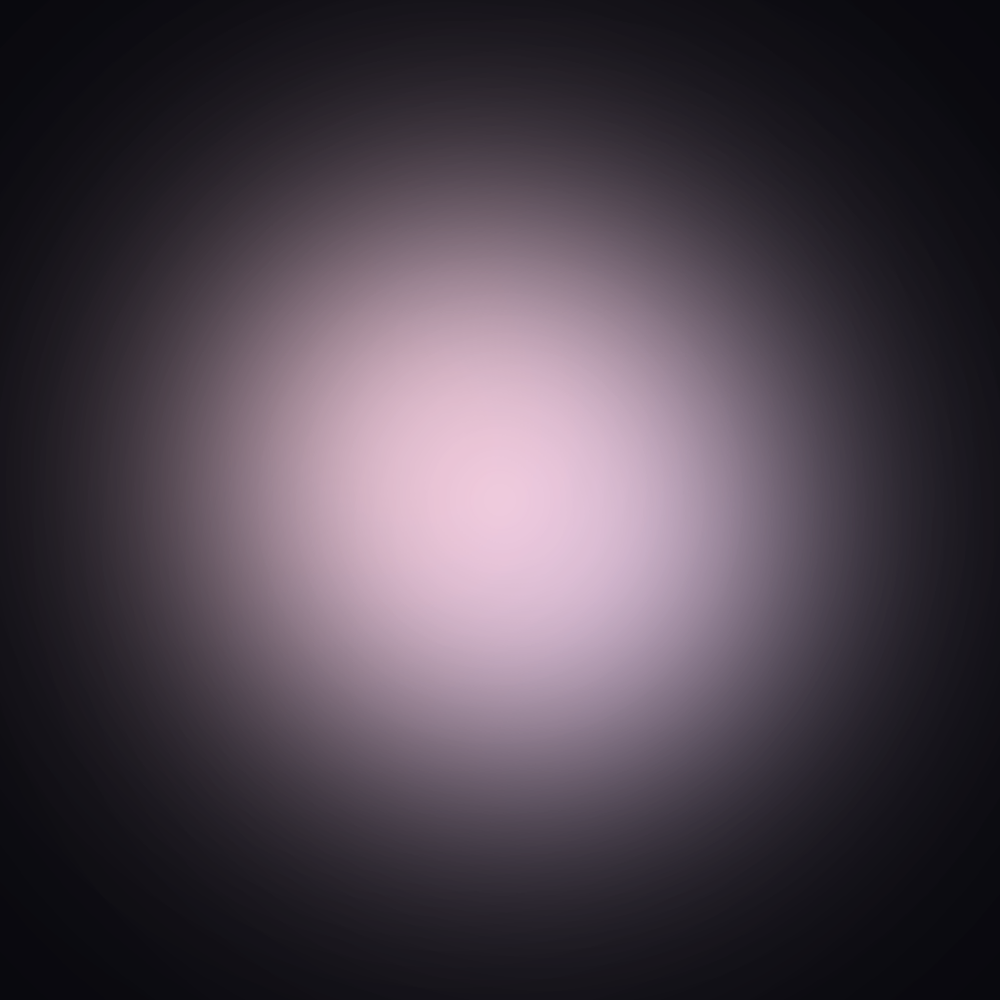
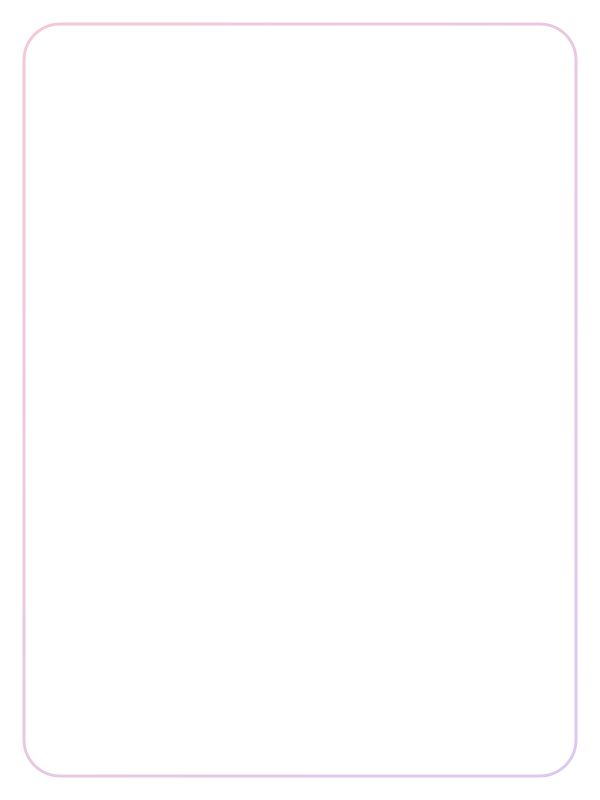

identité visuelle · septembre 2026
charte graphique

identité visuelle · septembre 2026

01 · identité
Le logo aura est doux, arrondi et entièrement en bas-de-casse. Son dégradé rose–lavande porte l’identité de marque sur le fond nocturne de l’expérience.
Conserver autour du logo un espace libre au moins égal à la hauteur du « a ».
Utiliser le fichier vectoriel fourni. Préserver ses proportions et son dégradé.
Ne pas étirer, recolorer, ajouter de contour ou poser sur un fond trop chargé.
02 · système coloriel
La base est presque noire. Le texte reste légèrement teinté, tandis que le rose et la lavande signent les actions, les contours actifs et les lumières.
Dégradé signature : #F4C9D6 → #DCC9EF, horizontal pour les boutons et le logo.
03 · univers chromatiques
Chaque palette rassemble six tons destinés au moteur visuel. Leur ordre fait partie de la combinaison.
Les palettes expressives complètent les couleurs de marque ; elles ne remplacent pas le fond, le texte ou les accents d’interface.
04 · typographie
interface · segoe ui / helvetica neue
choisis ton ambiance.
laisse-toi porter.
Le dessin du logo est issu de Comfortaa SemiBold. Toujours employer le fichier SVG, jamais une recomposition typographique.
05 · interface
Les formes sont généreusement arrondies. Les contours restent fins et translucides ; l’état actif gagne en lumière sans devenir opaque.
06 · iconographie et matière
 lecture
lecture pause
pause arrêt
arrêt
cadreLes pictogrammes utilisent le dégradé signature, des angles adoucis et des masses simples. Ils restent lisibles sans contour superflu.
07 · ton de marque
Privilégier le tutoiement, les verbes d’action et les formulations brèves. Employer la bas-de-casse dans l’interface. Éviter le jargon technique, les injonctions sèches et la ponctuation excessive.
Une expérience nocturne, vivante et personnelle où la lumière répond au geste.